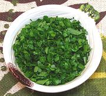

|
Cheiro VerdeBrazil / Portugal - Cheiro Verde | ||||
| Makes: Effort: Sched: DoAhead: |
Bunch * 10 min Yes |
Cheiro Verde, literally "Green Smell", is practically universal to Brazillian & Portuguese cuisines. See Simplicity and Complexity for details. | |||
|
1 1 |
bunch bunch |
Parsley, Flat Cebolinha (1) |
Make - (10 min)
|